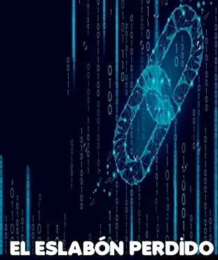

El phishing es un tipo de ataque cibernético que utiliza técnicas de ingeniería social para engañar a las víctimas, haciéndose pasar por entidades de confianza (como bancos, servicios de correo o plataformas conocidas) con el fin de robar información sensible como contraseñas, datos bancarios o números de tarjetas de crédito. Este comportamiento se considera parte de los ciber ataques y ha evolucionado desde sus inicios en la década de 1990.
Los ataques de phishing suelen comenzar con mensajes fraudulentos (por correo, SMS o redes sociales) que parecen legítimos, pero contienen enlaces o archivos maliciosos que redirigen a páginas falsas o instalan malware. Estos mensajes se aprovechan de la confianza del usuario, utilizando logos, formatos y lenguaje similares a los de las instituciones reales, aunque a veces presentan errores sutiles en colores, tipografía o estructura.
Para prevenirlo, es de suma importancia la concientización de los usuarios, ya que la vulnerabilidad humana sigue siendo el eslabón más débil en la seguridad digital. Las medidas incluyen verificar la autenticidad de quién envía los mensajes, no dar clic en enlaces sospechosos y utilizar autenticación de dos pasos.
Para poder acceder a EDUCAPLAY, es necesario hacer clic en el boton. En la pantalla, pedirá un PIN, el cuál será: 510804 . Posteriormente, se pedirá un nombre de usuario, Se podrá colocar cualquier nombre, cuando termine, clic en entrar, finalmente en comenzar e iniciará el reto.
Para poder acceder a GENEALLY, es necesario hacer clic en el boton. En la pantalla, estará la opción de empezar, se dará clic e iniciará el reto. En cada pregunta, cuando se responda, se tendrá que dar clic en el boton "enviar", cada vez que se responda, ya sea correcta o incorrectamente se mostrará una leyenda, al final, de toda la encuesta, se mostrará el puntaje.
Para poder acceder a GOOGLE FORMS, es necesario hacer clic en el boton. En la pantalla, se pedirá un nombre de usuario, luego dar clic en siguiente iniciará el reto. En cada pregunta, cuando se responda, se tendrá que dar clic en el boton "siguiente" al final, de toda la encuesta, se mostrará el puntaje y todas las respuestas.
© F.R. Todos los derechos reservados.